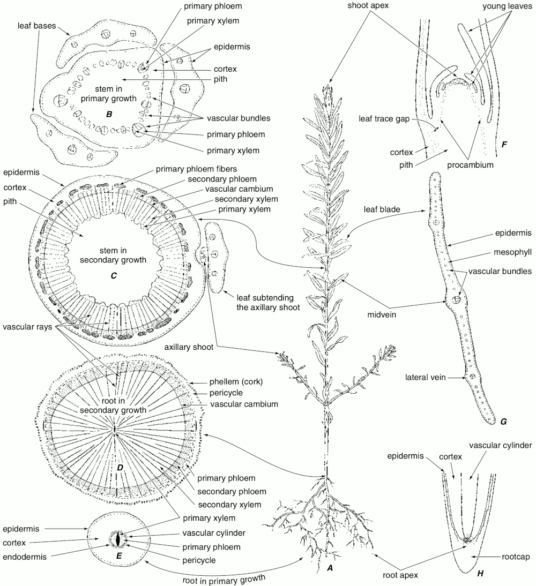
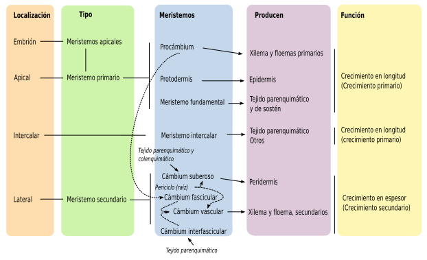
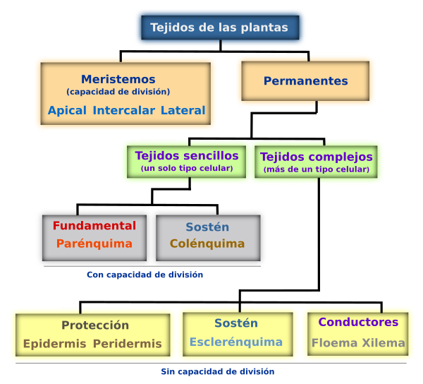
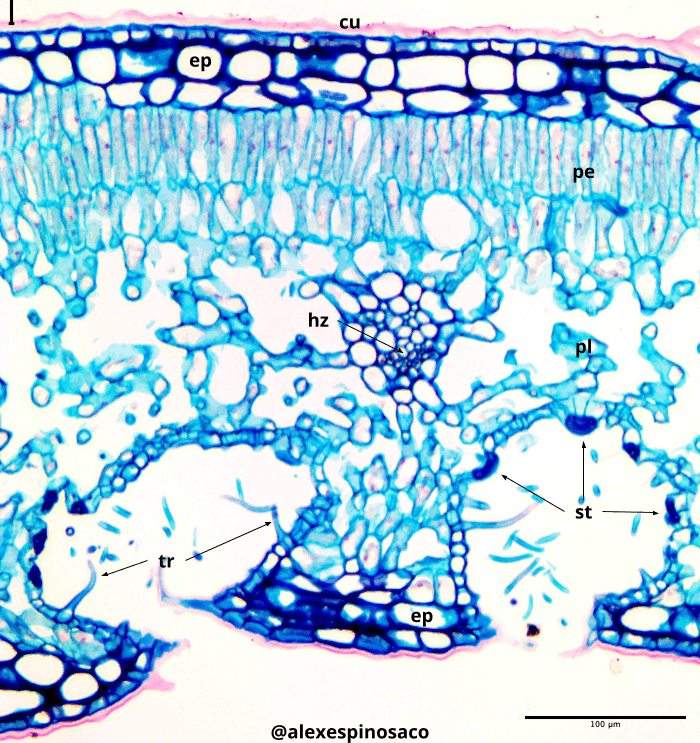
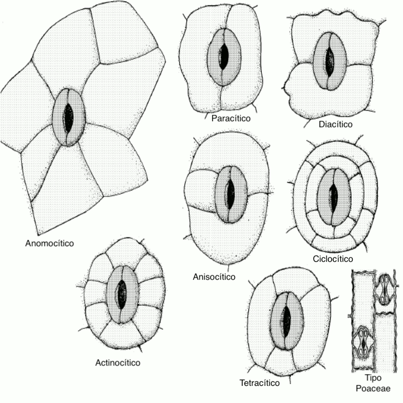
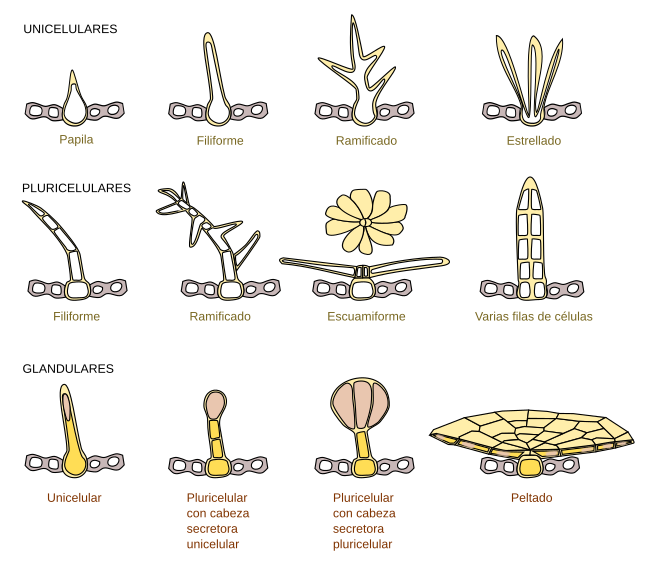
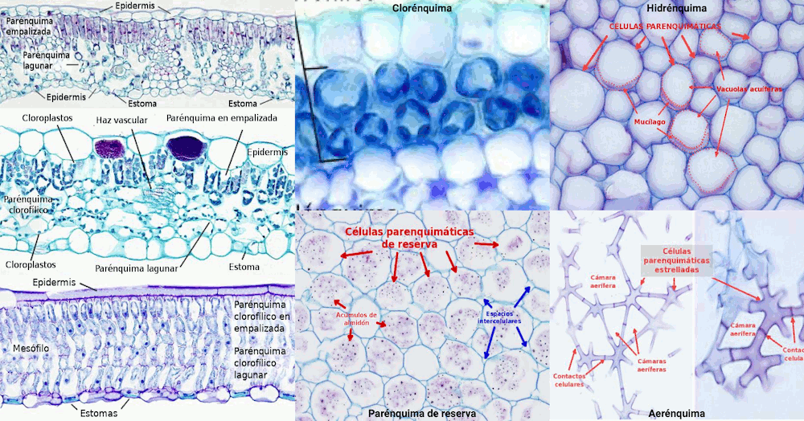
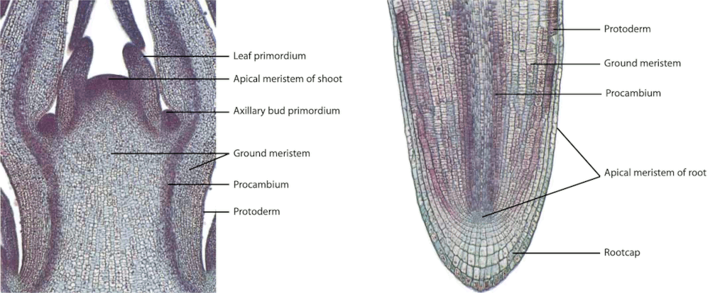

3 Histología I
3.1 Introducción

El cuerpo de las plantas vasculares (Tracheophytes) poseen conjuntos de células diferenciadas que desempeñan una función específica. Estos grupos de células se denominan tejidos y pueden estar formados por uno o varios tipos de células.
Los meristemos se clasifican dependiendo de su persistencia y función en el cuerpo de la planta, como primarios y secundarios. Además, según la posición como apicales, laterales e intercalares. Todos los meristemos se caracterizan por poseer células con alta actividad mitótica y son fisiológicamente muy activos. Estas células son pequeñas e isodiamétricas, con pocos espacios intercelulares, el núcleo puede ocupar hasta un 50% del volumen celular y las paredes son delgadas de tipo primario. Estos meristemos constituyen verdaderos tejidos embrionarios que persisten durante toda la vida de la planta con lo cual su crecimiento es potencialmente perpetuo. La organización de los meristemos apicales en el cuerpo de la planta está dado por varios modelos: el modelo de la célula apical (aplicado a Briófitos y Pteridofitos), el modelo de los histógenos (aplicado principalmente a los meristemos radiculares), el modelo de la túnica/cuerpo (zonación topográfica) aplicado a los meristemos apicales de las Angiospermas y el modelo de la zonación histoquímica para Gimnospermas.
Los meristemos laterales corresponden al cambium y al felógeno (cambium suberoso). El cambium es responsable del crecimiento en grosor de los tallos al agregar capas celulares que se diferenciarán en xilema hacia la médula y floema hacia la corteza. Este tejido solo está presente en Angiospermas y Gimnospermas. El felógeno también es responsable del crecimiento en grosor al agregar capas de tejido que se diferenciarán el súber o corcho y felodermis este último, se transformará principalmente en células parenquimáticas. En conjunto al súber, felógeno y felodermis se les conoce como peridermis. Los meristemos intercalares se encuentran principalmente en gramíneas y son los responsables del crecimiento de las zonas nodales.

La epidermis en plantas cumple varias funciones: protección, intercambio gaseoso, revestimiento, evitar la desecación, excreción y secreción. Desde el punto de vista morfológico y fisiológico la epidermis no es un tejido homogéneo, hay muchas variedades y especializaciones: estomas, tricomas, glándulas etc. Este tejido tiene varios orígenes dependiendo del órgano en particular. En Briófitos y Pteridófitos se origina a partir de la única célula apical meristemática, en el caso de la raíz a partir del dermatógeno y en los ápices de los tallos a partir de la capa más externa de la túnica. En la mayoría de las plantas la epidermis es de una sola capa, sin embargo, en algunos casos puede ser pluriestratificada.
El parénquima es un tejido poco diferenciado y se puede considerar precursor de los demás tejidos. El parénquima es un tejido con varias funciones metabólicas importantes para la planta: fotosíntesis, elaboración y almacenamiento de sustancias, secreción, excreción, etc. De acuerdo con su función presentan formas variables, pero por lo general son prismáticas e isodiamétricas con múltiples caras que le confieren aspecto redondeado. Se derivan de los meristemos apicales y laterales, aunque también pueden conservar la capacidad de división celular. Existen varios tipos de parénquimas que se relacionan con la principal actividad metabólica que desempeñan: aerénquima (parénquima aerífero), clorénquima (parénquima fotosintético), hidrénquima (parénquima acuífero), parénquima de reserva, parénquima en empalizada, y .parénquima esponjoso o lagunar,

3.2 Objetivo
Introducir al estudiante en los aspectos morfológicos, anatómicos y estructurales relacionados con los meristemos apicales, laterales, sistemas epidérmicos y parénquima en plantas.
Caracterizar la estructura típica de los meristemos apicales y laterales.
Reconocer la diversidad de formas y tamaños celulares encontrados en los sistemas epidérmicos en plantas.
Determinar los patrones estomáticos y tipos de tricomas encontrados en plantas.
Caracterizar la estructura típica, forma y función del tejido parenquimático.
3.3 Materiales
3.3.1 Reactivos y utensilios
- Agujas de disección
- Cubreobjetos y portaobjetos
- Cuchillas
- Lanilla o toalla
- Microscopio
- Pinceles de punta fina
- Pinzas de punta fina
- Solución de Azul Alcián
- Solución de Lugol
- Solución de Glicerol al 30%
- Solución de Safranina
3.3.2 Material vegetal
- Hojas de Aloe vera (Sábila)
- Hojas de Brassica oleracea (Repollo)
- Hojas de Coffea arabica (Café)
- Hojas de Dianthus caryophyllus (Clavel)
- Hojas de Ficus elastica (Caucho)
- Hojas de Nerium oleander (Adelfa, Azucena de La Habana)
- Hojas y tallos de Canna spp. (Achira, Bandera)
- Hojas y tallos de Cannabis sativa (Marihuana)
- Hojas y tallos de Cyperus papyrus (Papiro)
- Hojas y tallos de Nicotiana tabacum (Tabaco)
- Hojas y tallos de Pelargonium spp. (Geranio, Novio)
- Hojas y tallos de Portulaca oleracea (Verdolaga)
- Hojas y tallos de Solanum lycopersicum (Tomate)
- Hojas y tallos de Solanum quitoense (Lulo)
- Hojas y tallos de Solanum tuberosum (Papa)
- Hojas y tallos de Tillandsia recurvata
- Hojas y tallos de Tradescantia pallida (Guardaparque)
- Ramas con ápices de Solenostemon scutellarioides (Cóleo)
- Ramas de Egeria densa (Elodea)
- Tallos de Aristolochia ringens
3.4 Procedimiento
Se ha de realizar un registro detallado de todo lo observado, así como responder las preguntas orientadoras. No olvide revisar la guía. El no conocer el material vegetal, no es una excusa válida para no llevarlo al laboratorio. Revise en la red, para observación de fotografías y nombres oficiales de las plantas en páginas especializadas. Muchos ejemplares solicitados para el laboratorio se encuentran en el campus universitario, en parques y jardines de la ciudad y/o en herboristerías, supermercados y viveros.
3.4.1 Epidermis monoestratificada y pluriestratificada
- Realice cortes finos transversales de hojas de Dianthus caryophyllus y Ficus elástica sin aplicar tinción (Figura 2.3). ¿Qué tipo de epidermis encuentra en cada caso? ¿Qué diferencias funcionales y anatómicas se aprecian entre los dos tipos de epidermis observadas?

3.4.2 Estomas y patrones estomáticos
Realice cortes transversales de hojas de Ficus elástica y Nerium oleander, tiña con Safranina y Azul Alcián. Observe la cara abaxial de la lámina foliar y aprecie la presencia de estomas dentro de criptas estomáticas. ¿Qué ventaja le ofrece a estas plantas la disposición de los estomas en criptas? ¿Qué familias de plantas posiblemente tendrían esta disposición estomática?
Realice cortes longitudinales de la epidermis abaxial de hojas de Brassica oleracea, Coffea arabica, Dianthus caryophyllus, Tradescantia pallida y de las plantas que tenga a disposición, aplicando la tinción de Safranina y Azul Alcián. Observe los patrones estomáticos característicos de estas plantas (anisocítico, paracítico, diacítico, tetracítico, actinocítico y ciclocítico) ¿Todas las plantas tienen algún patrón estomático característico? ¿Existen patrones estomáticos adicionales? ¿Tienen alguna importancia taxonómica o sistemática?

3.4.3 Revestimientos pilosos o tricomas
- Realice cortes transversales finos de hojas, peciolos y tallos de Cannabis sativa, Nicotiana tabacum, Pelargonium spp., Portulaca oleifera, Solanum lycopersicum, Solanum tuberosum, Solanum quitoense, Tillandsia recurvata y cualquier otra planta que tenga a disposición. Observe la presencia de diferentes tipos de tricomas (unicelulares: alargados, enrollados, estrellados, glandulares, ramificados, etc.; pluricelulares: alargados simples, escuamiformes, estrellados, dendroides, glandulares, lanosos, peltados, ramificados, etc.) ¿Los tricomas tienen importancia taxonómica o sistemática? ¿Desde el punto de vista biológico que funciones desempeñan?

3.4.4 Observación del tejido parenquimático
- Realice cortes transversales finos de hojas de Nerium oleander, haga la tinción rutinaria de Safranina y Azul Alcián, monte con una gota de glicerina. Observe la presencia del parénquima fotosintético que en las hojas tiene disposición de empalizada, además, observe el parénquima esponjoso o lagunar, que se identifica fácilmente por la presencia de grandes espacios aeríferos entre sus células.
Repita el procedimiento pero coloreando con lugol para facilitar la observación del parénquima de reserva con amiloplastos. ¿La disposición de los tejidos fotosintéticos entre la cara adaxial y abaxial es la misma?
Realice cortes transversales de talo de Egeria densa, pecíolo de Canna spp., hoja o tallo de Cyperus papyrus. Tiña con Safranina y Azul Alcián, monte con una gota de glicerina. Observe la presencia del parénquima aerífero que se identifica por que las células son muy variables en forma y entre estas se establecen grandes espacios aéreos. ¿El parénquima aerífero presenta la misma morfología en las especies estudiadas? Explique.
Realice cortes transversales finos de la hojas de Aloe vera, tiña con Safranina y Azul Alcián. Observe la presencia de un tejido formado por células grandes de apariencia hincha por la presencia de grandes vacuolas y de paredes celulares delgadas. Este tejido corresponde al parénquima acuífero o hidrénquima.

3.4.5 Meristemos apicales y laterales
Realice cortes transversales finos del tallo de Aristolochia ringens agregue una gota de Safranina, deje unos segundos, elimine el exceso con papel secante, luego, agrego una gota de Azul Alcián, repita el procedimiento de limpieza anterior y finalmente agregue una gota de Glicerol. Observe al microscopio en 10x, 40x y si es necesario en 100x. Centre su atención al cambium vascular e interfascicular, que se reconocen fácilmente por formar varias capas celulares de forma casi rectangular entre el xilema y el floema. ¿Cuál es el origen del cambium? ¿Este meristemo de crecimiento lateral se encuentra en todas las plantas?
Realice cortes transversales finos del tallo maduro e inmaduro de Pelargonium spp. Aplicando la coloración anterior. Compare las diferencias anatómicas e histológicas encontradas. Posteriormente, fíjese en la presencia del felógeno hacia la corteza acompañando o no a la epidermis; este meristemo produce células suberosas o de corcho hacia fuera del tallo y felodermis hacia la médula. En conjunto se les da el nombre de peridermis. ¿Qué diferencias estructurales se pueden apreciar entre estos tres tipos celulares? ¿Cuál es la función del súber? ¿La felodermis se diferenciará en otro tipo tisular?
Tome los meristemos apicales de la planta Solenostemon scutellarioides y realice cortes longitudinales finos. Aplique la tinción ya indicada previamente (el corte lo puede hacer utilizando cualquier otra planta donde se le facilite). Observe el desarrollo del meristemo apical y los primordios foliares. Es posible si el corte es lo suficientemente fino, apreciar la organización del ápice de acuerdo con la teoría de la Túnica/corpus.
